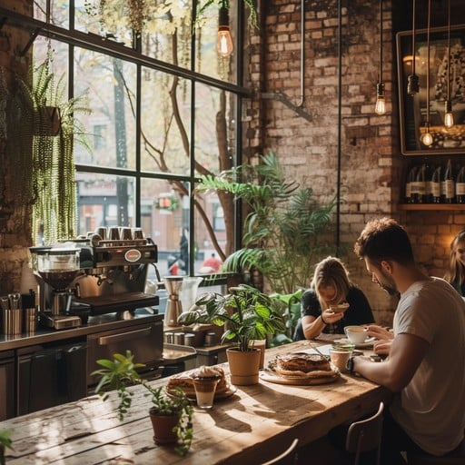
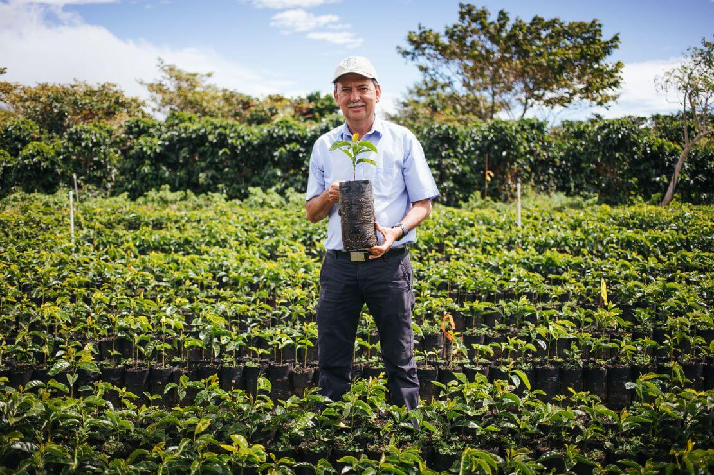

Discover the World of Specialty Coffee
At Pure Taste, we bring you an exquisite selection of coffee from around the globe, crafted with passion and precision.
THE ART OF COFFEE
Pod Zidom Bistro is an upmarket bistro focusing on high-quality fresh ingredients and local wines. For many years, Pod Zidom Bistro has been popular among locals but it has also been internationally recognized and recommended by the prestigious Michelin Guide since 2019.

THE ART OF COFFEE
Pod Zidom Bistro is an upmarket bistro focusing on high-quality fresh ingredients and local wines. For many years, Pod Zidom Bistro has been popular among locals but it has also been internationally recognized and recommended by the prestigious Michelin Guide since 2019.

INTERIOR
Pod Zidom Bistro is an upmarket bistro focusing on high-quality fresh ingredients and local wines. For many years, Pod Zidom Bistro has been popular among locals but it has also been internationally recognized and recommended by the prestigious Michelin Guide since 2019.
MENU
Pod Zidom Bistro is an upmarket bistro focusing on high-quality fresh ingredients and local wines. For many years, Pod Zidom Bistro has been popular among locals but it has also been internationally recognized and recommended by the prestigious Michelin Guide since 2019.
Discover the Essence of Coffee
Join us at Pure Taste for a delightful journey through the world's finest coffee flavors.